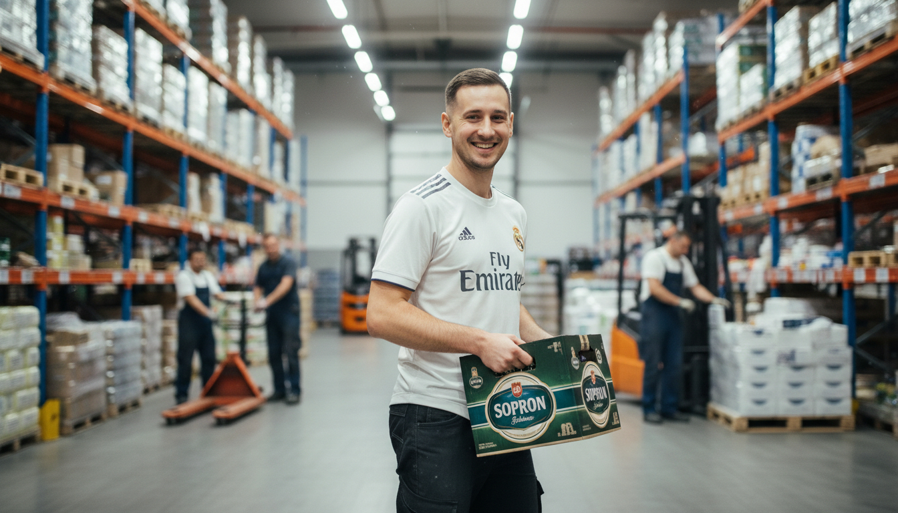

RÓLUNK
Sóreink alapját a Türr adja
Válogatott maláta, karakteres komló és mecseki forrásvíz. Minden kortyban ott lapul a gondosan felépített receptúra.

Válogatott maláta, karakteres komló és mecseki forrásvíz. Minden kortyban ott lapul a gondosan felépített receptúra.